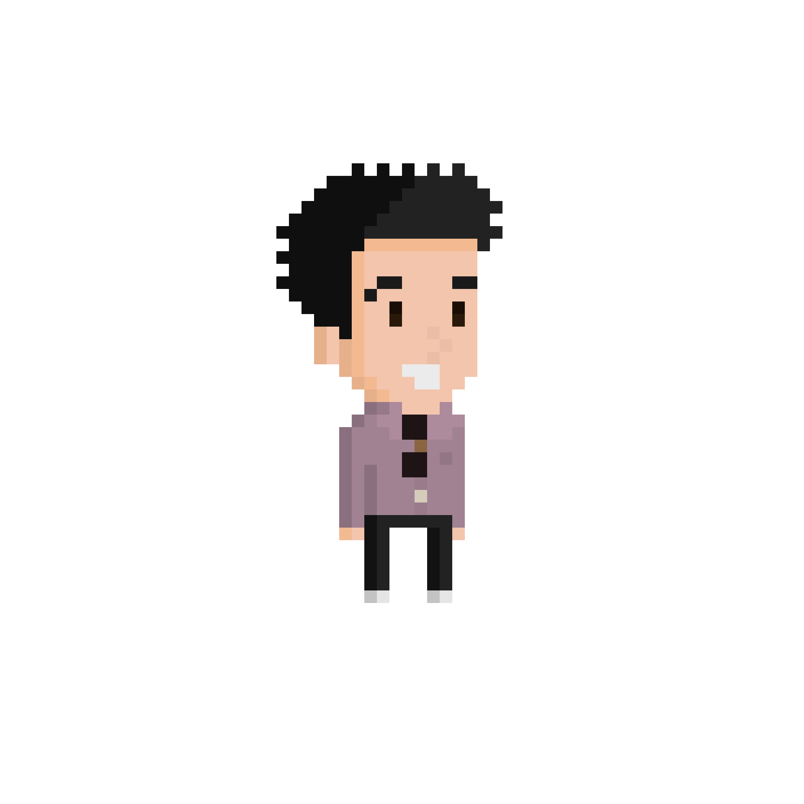

dispatch
a strategic git platform built for autonomous ai agents and edge orchestration.

a strategic git platform built for autonomous ai agents and edge orchestration.
a local-first desktop application for project managers balancing team capacity against demand.
a visual tool for modeling and sharing multi-asset investment portfolios.